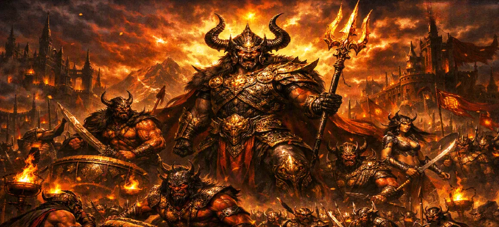

Tārakāsura Prepares for War
Chapter 23 of the Kumara Khanda delves into the intense, frantic, and formidable war preparations of the demon king Tārakāsura as he realizes the magnitude of the threat approaching his stronghold.
Confronted by the unstoppable light of the divine army, the tyrant scrambles to unify his own dark forces for a final, desperate stand.
Chapter 23 Highlights & Full Overview
Sudden Realization
The impact of the celestial army's arrival on Tārakāsura.
Urgent Mobilization
Issuing commands to gather all demonic legions immediately.
Fortifying Defenses
Reinforcing the gates and walls of his dark stronghold.
Demon Generals
Calling his top commanders to strategize and lead the charge.
Aggressive Posture
Adopting a stance of defiant and fierce military aggression.
Chaotic Preparation
The frantic atmosphere inside the capital of the tyrant.
Core Topics Detailed in This Chapter
- 01Tārakāsura Learns of the Divine Army's Arrival→
- 02The Frantic Call to His Generals→
- 03Mobilization of the Demonic Legions→
- 04Fortifying the Dark Stronghold→
- 05Boastful Claims and Arrogant Defiance→
- 06Final Preparations Before the Confrontation→
- 07Transition to Chapter 24 (The Great Battle Begins)→
1. Tārakāsura Learns of the Divine Army's Arrival
The intelligence scouts of the demon king bring the alarming news—an army of unparalleled brilliance, led by none other than the son of Shiva, has arrived at his very doorstep. The initial shock gives way to a simmering rage, as Tārakāsura realizes that the time of unchallenged tyranny is rapidly coming to an end.
2. The Frantic Call to His Generals
Tārakāsura summons his most trusted and powerful demonic generals. With an aura of command that is both desperate and fearsome, he orders them to activate the entire demonic defense system. There is no time to waste, and every weapon, every unit, and every warrior must be ready for immediate action.
3. Mobilization of the Demonic Legions
Across the vast, dark domains of Tārakāsura, the call to war echoes. Myriads of demons, giants, and dark spirits swarm from their hidden depths, forming massive legions. The mobilization is a sight of terrifying power, as these thousands of entities align to protect their king and their dark realm against the encroaching forces of light.
4. Fortifying the Dark Stronghold
Recognizing the strength of the divine army, Tārakāsura orders his engineers to reinforce the citadel walls with enchantments and thick, impenetrable barriers. The gates are barricaded with massive iron reinforcements, and defensive machines of war are positioned to rain destruction upon any who dare to attack.
5. Boastful Claims and Arrogant Defiance
Even in the face of inevitable battle, Tārakāsura remains consumed by pride. He declares to his troops that no god, human, or celestial has the power to defeat him. His rhetoric is filled with arrogance, designed to boost the flagging morale of his army and instill a false sense of invincibility before the clash begins.
6. Final Preparations Before the Confrontation
The dark capital is now a cauldron of activity, brimming with weaponry, war chariots, and warriors. Tārakāsura completes his own ritualistic preparations, drawing upon his accumulated dark powers. With every preparation made, he waits for the dawn, fully braced to lead his forces into the most pivotal conflict in history.
7. Transition to Chapter 24 (The Great Battle Begins)
As the night draws to an end and the first light of day touches the horizon, the demonic host is ready. The tension between the forces of light and darkness reaches a breaking point. This transitions directly into Chapter 24: **The Great Battle Begins**, where the two sides finally clash in a monumental struggle for the fate of the universe.
Key Teachings and Spiritual Takeaways of Chapter 23
Confronting Reality
Ignorance cannot persist forever; truths eventually come to light.
Arrogance’s Trap
Pride and ego cloud judgment, even in moments of grave danger.
Darkness's Unity
Negativity will always attempt to unify against the encroaching truth.
Defensive Posture
Those entrenched in wrongdoings will cling fiercely to their position.
Inevitable Conflict
Light and darkness are destined to clash when boundaries are tested.
Strategic Mind
Even in chaos, organization is necessary for sustained action.
Spiritual Reflection
Chapter 23 serves as a mirror to our own inner struggles. When the 'light' of higher consciousness confronts our deep-seated negative habits (our personal Tārakāsuras), our ego will often desperately mobilize its defenses to remain in control. Recognizing this frantic ego-response is the first step toward true inner victory.
Living the Message of Chapter 23
Be aware of your ego's defensive mechanisms when you seek positive change.
Do not let pride blind you to the necessity of personal growth and self-correction.
Understand that struggle is often a sign that you are moving in the right direction toward your higher self.
Key Spiritual Concepts
The frantic mobilization of demonic legions for war.
The rage and pride of the ego when threatened.
Fortifying internal barriers against truth and awareness.
The binding influence of egoistic defenses.
The crisis of righteousness caused by persistent ego.
The monumental collision between light and darkness.
Chapter Summary
Kumara Khanda Chapter 23 depicts the frantic preparations of the demon king Tārakāsura, who, upon learning of Lord Skanda's arrival, mobilizes his demonic legions, fortifies his stronghold, and fueled by arrogance, prepares for a desperate confrontation with the celestial forces.
Frequently Asked Questions
1. What is the primary focus of Kumara Khanda Chapter 23?
Chapter 23 focuses on the reaction of the demon king Tārakāsura to the arrival of the celestial army and his subsequent frantic efforts to mobilize his massive demonic legions for the impending war.
2. How does Tārakāsura respond to the threat?
He exhibits a mix of arrogant defiance and urgent tactical preparation, ordering his commanders to fortify defenses and assemble all available forces to challenge the divine army.
3. What is the tone of the preparations?
The tone is one of urgency, chaos mixed with disciplined military aggression, reflecting the realization that a formidable, divinely-guided foe has arrived.
4. What chapter follows Chapter 23?
The next chapter is Chapter 24, titled 'The Great Battle Begins'.
“Consumed by pride and faced with the light of divinity, Tārakāsura mobilized his dark legions for a desperate, final stand against righteousness.”
Continue Through Kumara Khanda
Chapter 23 details Tārakāsura's preparations. Continue to the next chapter, The Great Battle Begins.